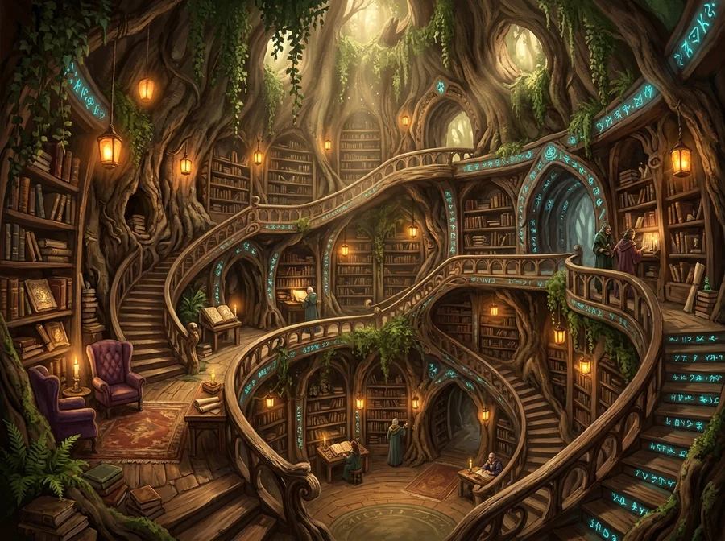
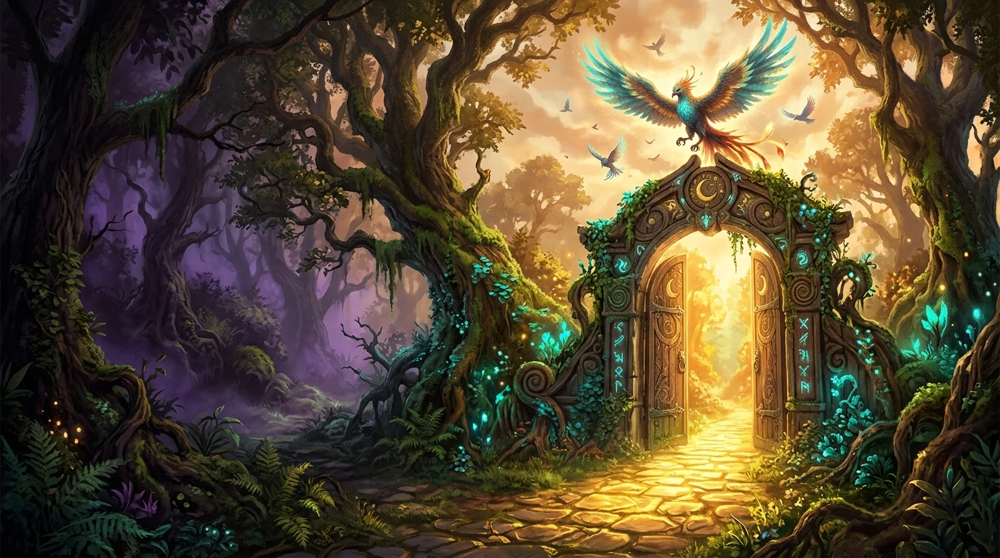
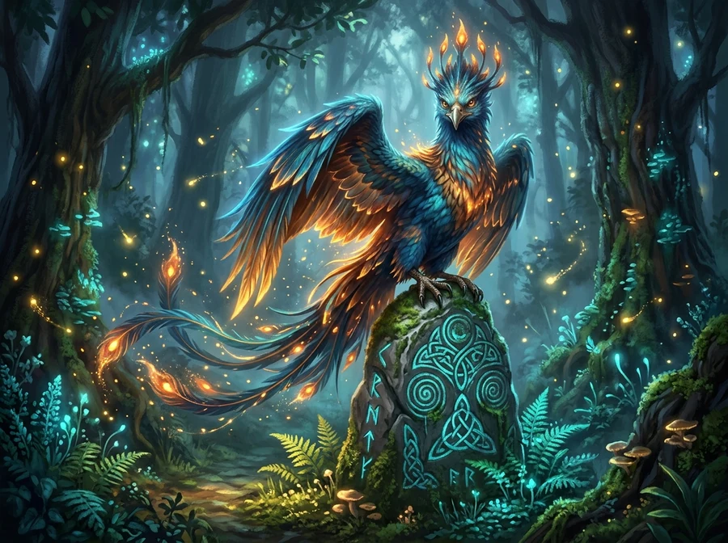
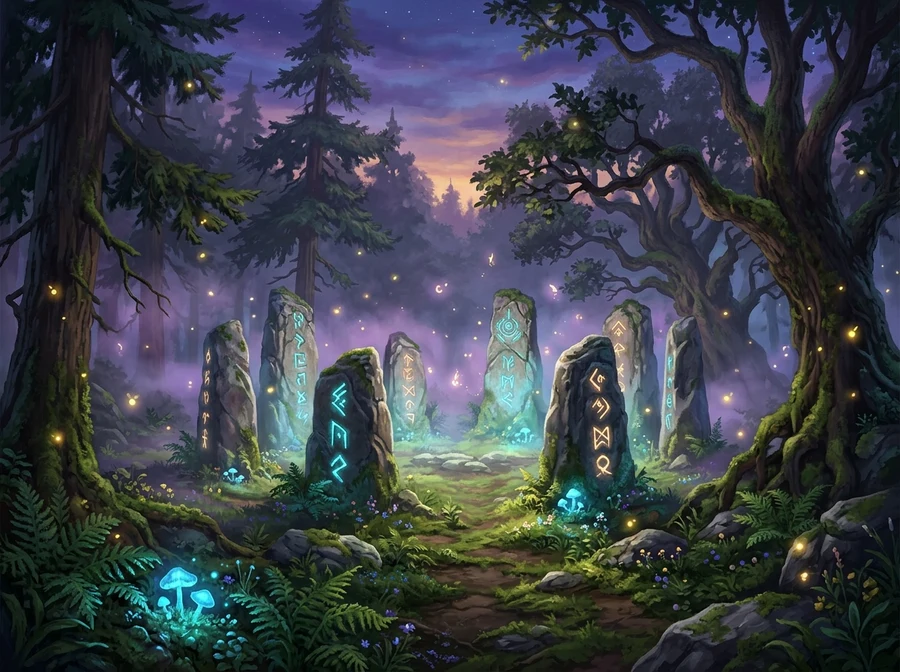

REALM // 01 · HOLLOW OAK
The Elder Tree Library
Spiraling timber galleries lit by floating amber lanterns and glowing cyan botanical runes.

CHRONICLES OF THE ANCIENT GROVE
Step across the carved elder-oak threshold where teal-winged phoenix familiars guard the sun-dappled pathway into the Nocturne Archive.

Spiraling timber galleries lit by floating amber lanterns and glowing cyan botanical runes.

Winged woodland familiars that guide travelers across the misty canopy bridges at dawn.

Bioluminescent moss and carved monoliths resonating with ancient starlight harmonics.
The carved oak portal is attuned to your guild sigil. Follow the golden stone path past the phoenix perch into the Hollow Tree Archive.